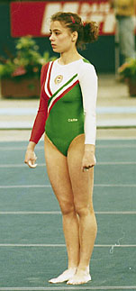

Zsuzsa Csisztu (HUN)
1988 Olympian
1990 Champions All AA Silver Medalist

Zsuzsa was born on February 15, 1970, and began gymnastics at age 5. A 1992 graduate of the University of Minnesota, Zsuzsa competed for the Gophers while earning a degree in Communication and Media. She returned to Hungary and began working full-time at Hungarian Television in the Fall of 1992. She's a well-known TV sports commentator and journalist, and a member of the Hungarian Olympic Committee. She and her husband have two sons.
Competition Results
1981
Leverkusen Cup: 23rd AA
1982
Junior Friendship Tournament (Druzhba): 6th Team, 33rd AA
1983
Intl. Junior Championships: 22nd AA, 3rd V, 7th FX
Junior Friendship Tournament (Druzhba): 3rd Team, 5th B
1984
Jr. European Championships: 23rd AA, 7th V
1985
Hungarian Gymnastics Centenary: 2nd UB
Junior Competition of Socialist Capitals: 2nd Team, 3rd AA, 1st B, 4th V
Leverkusen Cup: 3rd AA
World Championships: 8th Team
1986
Chunichi Cup: 14th AA
Intl. Championships of Romania: 18th AA
ITA-HUN Dual Meet: 1st Team, 3rd AA
Masters Championsips: 2nd AA, 1st UB, 1st B, 1st FX
Matolay Memorial International: 2nd UB
1987
AUT-HUN Dual Meet: 1st Team, 3rd AA, 1st UB
Budapest Championship: 1st AA, 1st UB, 1st FX, 2nd B
Chunichi Cup: 8th AA
European Championships: 20th AA
HUN-FRA-SUI Meet: 1st Team, 2nd AA
Hungarian Championships: 3rd AA, 1st UB, 3rd V, 3rd B
Hungarian International: 2nd AA, 2nd UB, 2nd FX
Medico Cup: 2nd AA
Tokyo Cup: 5th B, 6th UB
World Championships: 7th Team
1988
Olympic Games: 8th Team
1989
Hungarian Championships: 3rd AA, 2nd UB, 2nd B
Medico Cup: 1st AA
World Championships: 9th Team
1990
Budapest Championships: 6th AA, 1st UB, 2nd V
Champions All: 2nd AA
Hungarian Championships: 2nd AA, 1st V
1992
UCLA Invitational: 3rd AA
This page was created on May 21,
2009 and was last updated on January 13, 2022.
© Gymn Forum